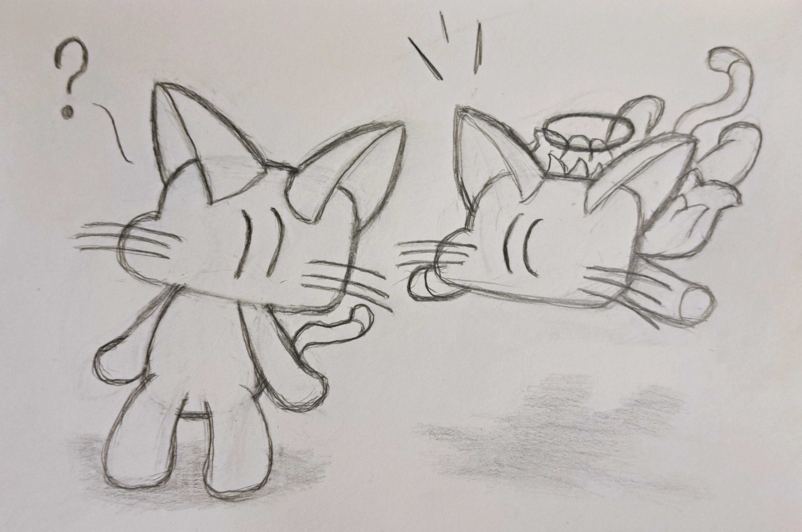
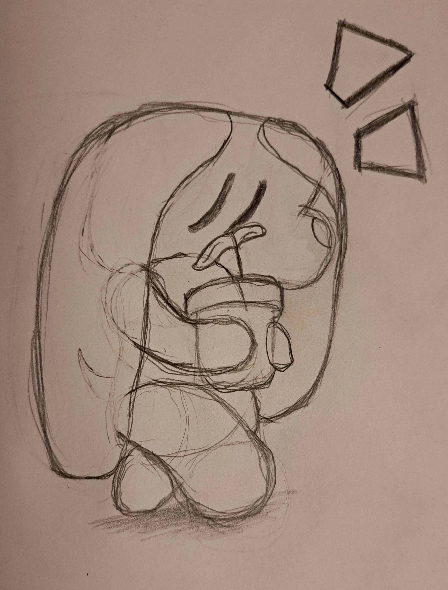
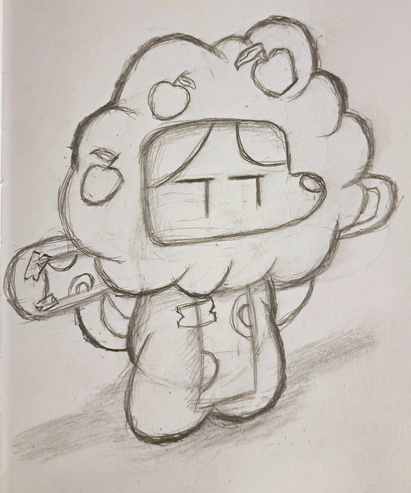
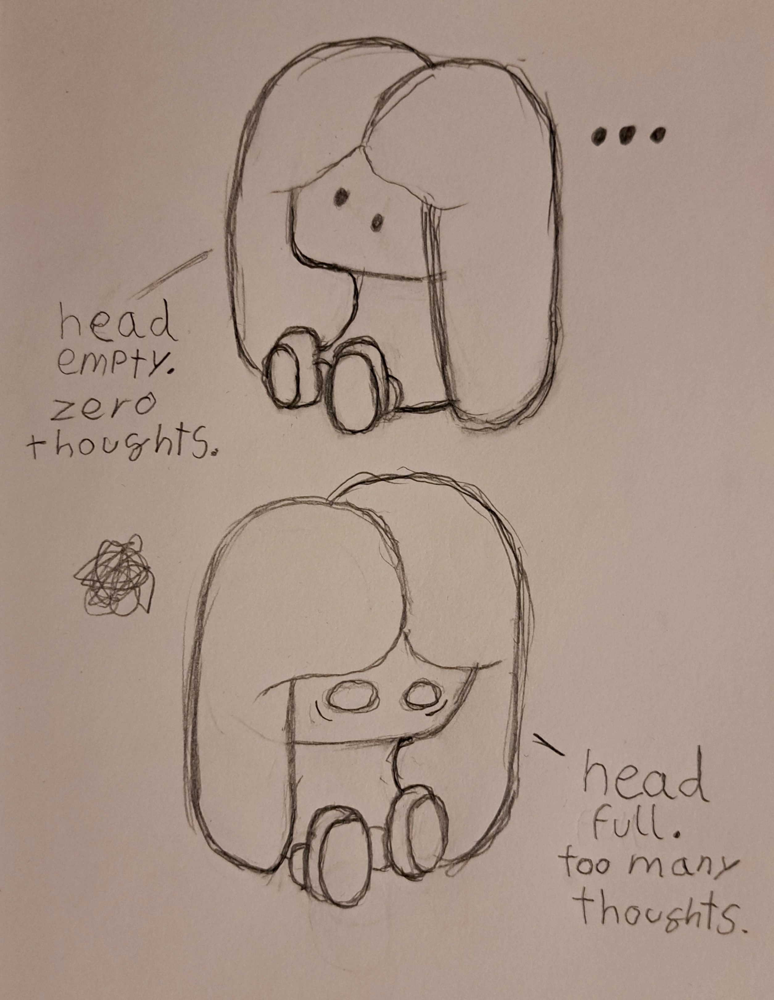
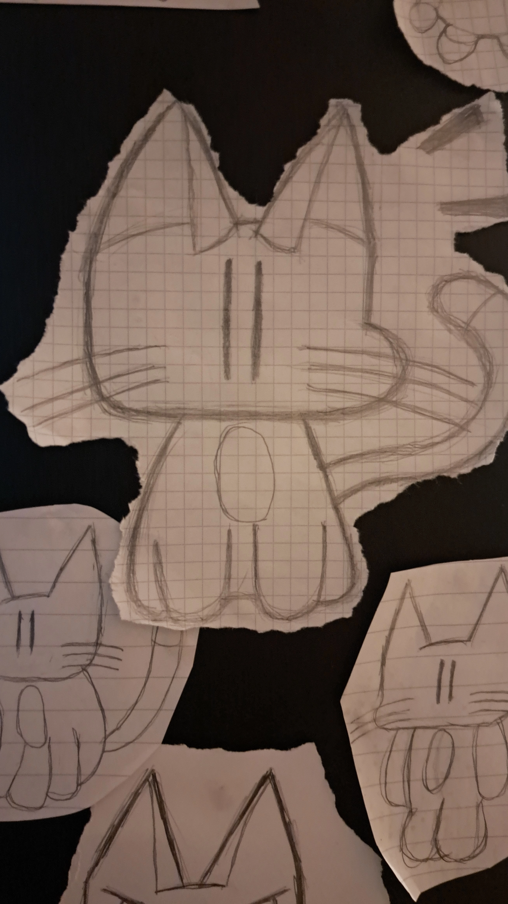
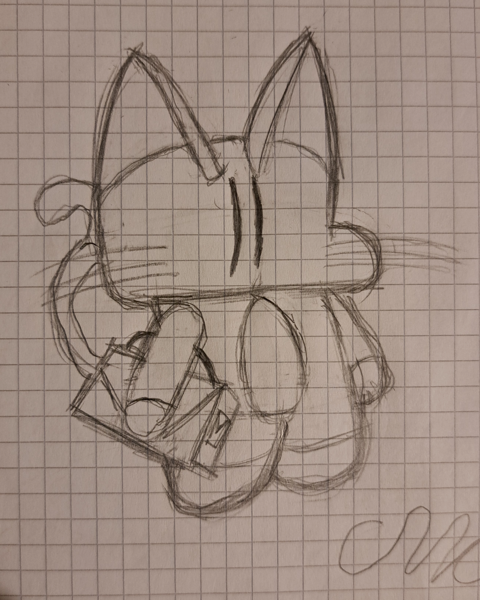
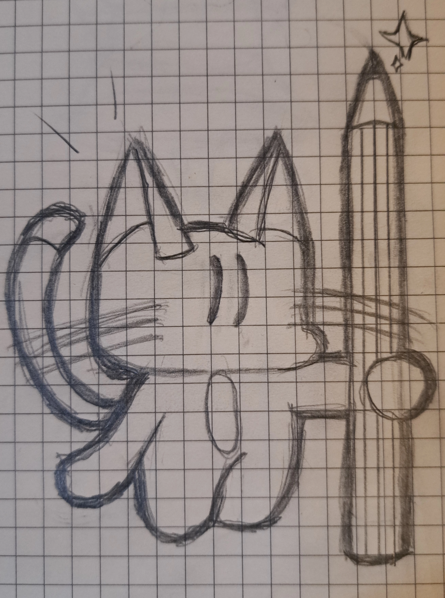
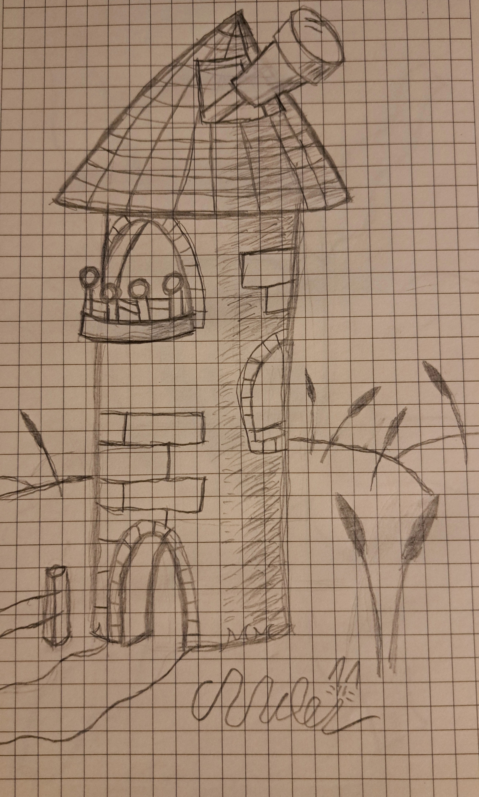
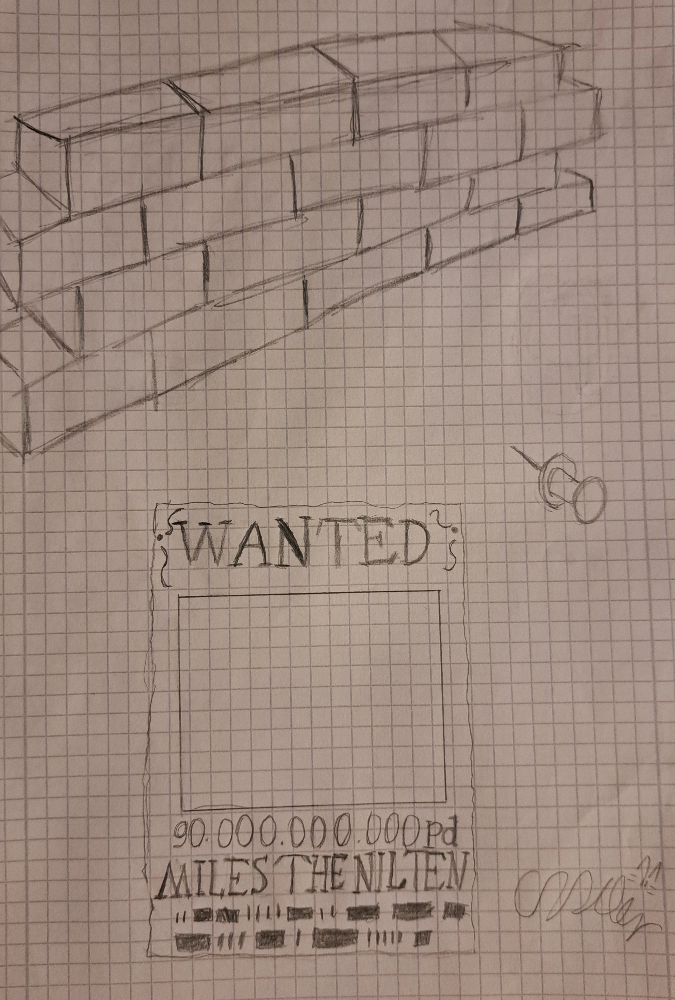

Sketches

A kitten and an angel (April 25th, 2026)

Finley and a house plant ! (April 18th, 2026)

Finley in a... tree costume? (April 24th, 2026)

Head empty. Zero thoughts... sometimes.
(April 18th, 2026)

A bunch of sketches stuck to my pc case
(late 2024/mid 2025)

Kitty with a briefcase ! (early september 2025)

Kitty with a pencil ! (mid 2025)

A sketch of an Observation Tower (mid(?) 2024)

Sketch of a wall with a wanted poster, mocking Ragna's wanted poster seen in BlazBlue's Story Mode.
Made for the old About Page. (late 2024)

Initial sketch of On Prowl (June 2025)

Initial sketch of Hard Rockin' Amigo (May 2025)

Initial sketch of A Trip to Space (June 2025)